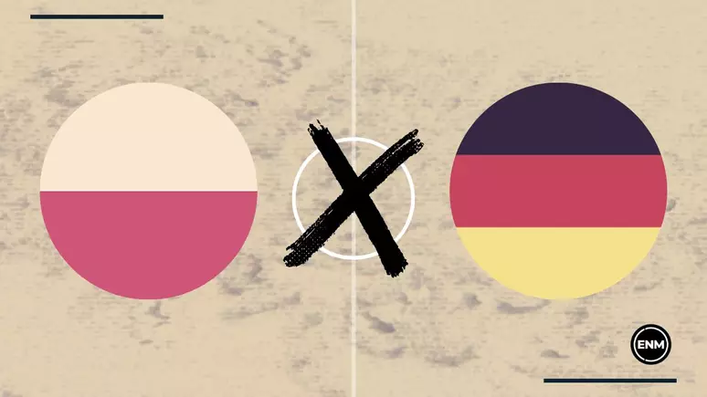
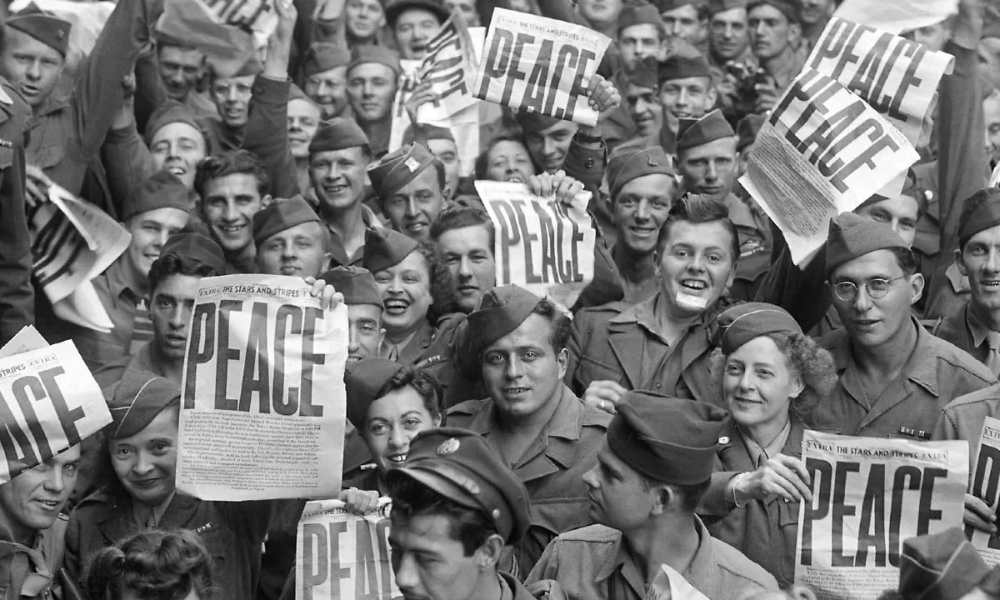

Segunda Guerra Mundial
O Que Motivou A Segunda Guerra Mundial
A Segunda Guerra Mundial teve início em 1 de setembro de 1939 e se encerrou em 2 de setembro de 1945. Foi um conflito mundial onde milhões de pessoas perderam a vida.
A Guerra aconteceu por conta de diversos fatores, entre esses fatores, estão incluídos as repercussões da Primeira Guerra Mundial, a ascensão do totalitarismo na Alemanha, Itália e no Japão, rivalidades territoriais e crises econômicas nos países.
O conflito começou quando a Alemanha Nazista invadiu a Polônia, essa invasão gerou uma reação em cadeia envolvendo as nações por todo o mundo em dois lados opostos: Os Aliados liderados pelos Estados Unidos, Reino Unido, França e União Soviética e O Eixo liderado pela Alemanha, Itália e Japão.
Principais Eventos Da Segunda Guerra Mundial
Durante a guerra,muitos eventos entraram para a história como: A invasão da Polônia, o Holocausto, o lançamento das bombas atômicas em Hiroshima e Nagasaki e outros eventos que resultaram em tragédias.
- INVASÃO DA POLÔNIA: Antes do início da Segunda Guerra Mundial, a Polônia previa que seria invadida pela Alemanha e assinou um acordo com a França e a Inglaterra para que esses países dessem apoio militar para a Polônia no caso de invasão. Quando a Polônia foi invadida pelos alemães, eles não puderam contar com o apoio da França e da Inglaterra e tinham um exército que não era bem equipado, causando a derrota da Polônia e dando início na Segunda Guerra Mundial.
- O HOLOCAUSTO: Foi o genocídio que os nazistas cometeram contra os judeus e outros grupos durante a Segunda Guerra Mundial, foi um processo que se tornou mais brutal com o passar do tempo.
- LANÇAMENTO DAS BOMBAS ATÔMICAS: Nos dias 6 e 9 de agosto de 1945, os Estados Unidos fizeram uso, pela primeira vez na história da humanidade, de armas atômicas contra as cidades japonesas de Hiroshima e Nagasaki. Essas bombas foram utilizadas para forçar a rendição japonesa e evitar que as tropas americanas precisassem invadir o Japão por terra.
O Fim Da Segunda Guerra Mundial
Com a queda da Alemanha Nazista e após o lançamento das bombas atômicas nas cidades de Hiroshima e Nagasaki, que mataram milhares de civis, o Japão acabou se rendendo e a guerra teve fim.
A guerra durou 6 anos e devastou diversas regiões pelo mundo, prejudicando a economia desses países. Depois do conflito, a Europa precisava se reconstruir social e economicamente. Os Estados Unidos não precisaram de recuperação, pois durante a Guerra não só sua economia não sofreu como cresceu muito com o fornecimento aos aliados.
O mundo no pós-guerra se tornou bipolarizado, ou seja, foi dividido em duas grandes áreas de influências, uma socialista e outra capitalista. O maior representante do lado capitalista são os Estados Unidos e do lado socialista a URSS.
